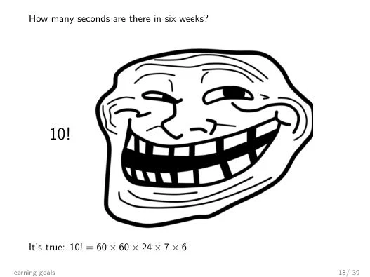
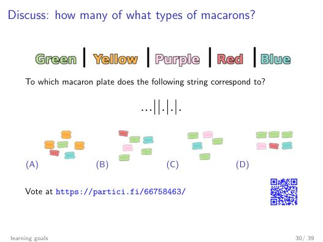
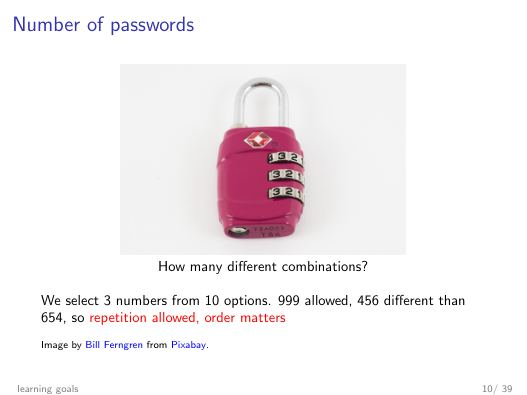
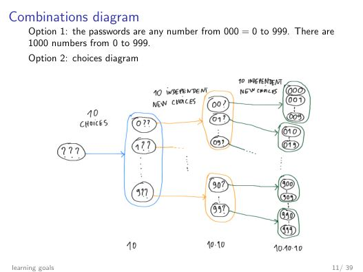
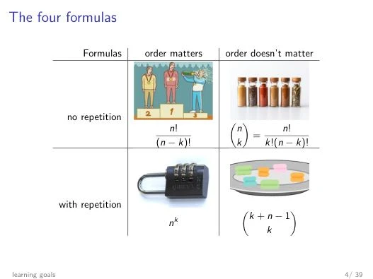

BM20A9200 数学A · 第 07 / 15 讲
第 7 讲 · 组合计数：四公式、Pascal 三角与二项式定理
Combinatorics: Four Counting Formulas, Pascal’s Triangle and the Binomial Theorem
所属章节：第 3 章 计数与归纳
资料来源 · 3 项 / 已附 0 项
07-lesson.pdf未附原文件08-exercise.pdf未附原文件Lecture5_Combinatorics and proof by induction.pdf未附原文件
未附文件仅列原始名称；版本与核对日期由维护者登记。
本节定位
第 7 讲只有一件事：数清楚“从 n 个选项里选 k 次”有多少种做法。听起来简单，但四种情形（能否重复 × 顺序是否重要）给出四个完全不同的公式，而考试题往往把它们混在同一道题里考。
这一讲的另一条线是二项式系数：C(n, k) 既出现在计数公式里，也出现在 Pascal 三角与二项式展开中。第 8 讲会用归纳法证明 Pascal 递推，第 12 讲会把二项式系数用在矩阵幂上。
学完本节你应当能够：
- 对任一计数问题先问三件事：能重复吗、顺序重要吗、有没有额外限制
- 熟练写出四个公式并说出各自的适用条件
- 把“函数个数”“单射个数”“双射个数”翻译成计数公式
- 用“点与竖线”编码解释可重复无顺序公式 C(k+n−1, k)
- 写出 Pascal 三角的前几行，并会用递推公式
- 用二项式定理展开 (a + b)ⁿ 并说明系数的组合意义
7.1 组合数学在数什么
组合数学（combinatorics）研究“一件事能以多少种方式发生”。历史上的两个例子：印度《Bhagabadi Sutra》（约公元前 300 年）问“从甜、辣、涩、酸、咸、苦六种味道中选一、二或三种，有多少种组合”；中国《易经》（约公元前 1000–200 年）的六十四卦，是六条线、每条线有阴（断）阳（连）两态的“可重复排列”，共 2⁶ = 64 种。
课程把它们统一成一句话：做 k 次选择，开始时有 n 个选项。例如“从 6 个味道里选 3 个”：k = 3、n = 6，不能重复、顺序无关（甜酸咸与酸甜咸是同一盘菜）；“写 6 条线，每条两态”：k = 6、n = 2，可重复、顺序有关（卦象不同）。
动手之前必须回答三个问题：(a) 能重复吗？(b) 顺序重要吗？(c) 还有别的限制吗？前两条决定用哪个公式，第三条决定这道题是否“超出四公式范围”。课件给的例子 “4 位老师教 7 个班，每人至少教一个班” 就属于第三条：因为“至少一个”是额外限制，不能直接套公式。
7.2 四个公式的总表
| 顺序重要 order matters | 顺序无关 order doesn’t matter | |
|---|---|---|
| 允许重复 with repetition | nk | C(k + n − 1, k) |
| 不允许重复 no repetition | n! / (n − k)! | C(n, k) = n! / (k!(n − k)!) |
记忆方法：先看重复（重复 → 幂或“点线编码”；不重复 → 阶乘或二项式系数），再看顺序（顺序 → 除 (n−k)! 或直接相乘；无关 → 再除 k!）。四格里对角线上的两个公式最容易混：nk 与 C(k+n−1,k) 都是“可重复”，区别只在顺序。
7.3 可重复且顺序重要：nk
做 k 次选择、每次 n 个选项、可重复、顺序重要（两次选择结果只要某一位不同就算不同）。第 1 次有 n 个选项，第 2 次仍有 n 个（前面的选择不限制后面的），……第 k 次仍是 n 个，故总数 nk = n × n × … × n（k 个因子）。
典型例子：三位数密码锁，每位 0–9，允许 999、456 与 654 不同，故共 10³ = 1000 种（也可理解为从 000 = 0 到 999 共 1000 个数）。Ex1：一周 6 道题，每题“做了/没做”，填分表的方式有 2⁶ = 64 种。Ex2：A 有 12 个元素，则 A³ = A × A × A 有 12³ = 1728 个元素。Ex3：B 有 3 个元素，则有序对有 3² = 9 个（无序的二元子集只有 C(3,2) = 3 个）。
与函数的关系：若 #A = k、#B = n，则从 A 到 B 的函数共 nk 个。理由是对 A 的每个元素独立地选一个像，k 个元素各 n 种选择。这条把“计数”与“函数”直接连起来：Ex6 问 #A = 3、#B = 4 时有多少函数，答 4³ = 64。
7.4 不重复且顺序重要：n!/(n−k)!
第 1 次 n 个选项，第 2 次 n − 1 个（不能选已选的），…，第 k 次 n − k + 1 个，故总数 n(n−1)…(n−k+1) = n!/(n−k)!。记号 a! = a(a−1)(a−2)…3·2·1，并约定 0! = 1。
经典例子（源文件 p19）：芬兰冰球联赛 15 支队伍，发金、银、铜牌，不允许并列。金牌 15 种、银牌 14 种、铜牌 13 种，故 15 × 14 × 13 = 2730 种。课件把 2730 个三元组逐一列出，说明“顺序不同算不同结果”（HPK, IFK, ILV 与 HPK, ILV, IFK 是两种）。
Ex4：三个任务 E（查邮件）、H（做作业）、C（上课），安排顺序有 3! = 6 种。Ex5：#A = 3、#B = 4 时单射有 4 × 3 × 2 = 24 个；#A = 4、#B = 3 时没有单射（抽屉原理：4 个元素映到 3 个值必撞车），公式给 3!/(3−4)! 无意义，说明必须 k ≤ n。
趣味等式：六周有多少秒？10! = 60 × 60 × 24 × 7 × 6 = 3628800。因为 60 秒 × 60 分 × 24 小时 × 7 天 × 6 周，恰好是 10! 的分解。
7.5 单射与双射的个数
当 #A = k、#B = n 且 k ≤ n 时，单射 f: A → B 的个数是 n!/(n−k)!（k 个因子相乘）。特别地，当 #A = #B = n 时，双射个数是 n!——这正是“n 个元素的排列数”。
满射的个数不在本课程范围内，因为它很难（与 Stirling 数有关）。考试若出现“满射计数”，通常只是要求判断“这属于哪一类”，或说明“不能直接套公式”。
7.6 不重复且顺序无关：C(n, k)
先按“有顺序”选：n!/(n−k)! 种；每个最终的无序选择对应 k! 种不同的排列（k 个元素的全排列），故要除以 k!：C(n, k) = n!/((n−k)!·k!)，读作“n choose k”，称为二项式系数（binomial coefficient）。
例（源文件 p27–p28）：从六种味道里选两种做菜，不能重复（甜甜不算），顺序无关（甜酸 = 酸甜）。按有序算是 6 × 5 = 30 种，每种无序组合被数了 2! = 2 次，故 30/2 = 15 种。课件把 30 个有序对全部列出再两两配对，直观展示“除以 k!”的过程。
性质：C(n, k) = C(n, n−k)（选 k 个等价于留下 n−k 个）；C(n, 0) = C(n, n) = 1；C(n, 1) = n。若 #A = n，则 A 的 k 元子集个数为 C(n, k)——这正是第 2 讲幂集 2ⁿ 的加总来源：Σ_k C(n, k) = 2ⁿ。
Ex7：六种味道选三种，C(6,3) = 20。Ex8：5 元素集合的 2 元子集有 C(5,2) = 10 个。
7.7 可重复且顺序无关：多重集
多重集（multiset）是“顺序无关但允许重复”的集合：作为多重集 {2, 2} ≠ {2}、{2, 3, 2} = {2, 2, 3} ≠ {2, 3}。若 #A = n，则 A 的 k 元多重集个数是 C(k + n − 1, k)。
推导（点线编码）：一个选择可以这样记录——先约定颜色顺序，然后写一串“点”和“竖线”：每个点代表一个当前颜色的物品，每条竖线代表“换到下一种颜色”。选 k 个物品、有 n 种颜色，就需要 k 个点与 n − 1 条竖线，共 k + n − 1 个符号。任意选定其中哪 k 个位置放点（其余放竖线），就唯一确定一种选择；不同的选择对应不同的符号串。故总数为 C(k + n − 1, k)。
例（源文件 p33–p37）：用 5 种颜色装 6 个马卡龙，C(6 + 5 − 1, 6) = C(10, 6) = 210。编码 ...||.|.|.（颜色顺序绿、黄、紫、红、蓝）表示 3 绿、0 黄、1 紫、1 红、1 蓝。Ex10：黑五购物车恰好 4 件、店里有 100 种商品，C(4 + 100 − 1, 4) = C(103, 4) = 4421275 种。Ex11：5 元素集合的 3 元多重集，C(3 + 5 − 1, 3) = C(7, 3) = 35。
7.8 四种情形的辨认练习
课件给了一组辨析题：哪些问题的答案是 C(10, 5)？(A) 用 0–9 组成 5 位 PIN 码——可重复、顺序重要，应是 10⁵；(B) 10 名学生分成两队各 5 人打篮球——不重复、顺序无关，但“两队”无标签，故是 C(10,5)/2；(C) 从 10 名与会者中选 5 人组成委员会——正是 C(10,5)；(D) 长度 10、含 5 个 1 的比特串——相当于从 10 个位置里选 5 个放 1，也是 C(10,5)。
2024 年第一次考试第 3 题把这一辨析做成了大题：(1) 12 件不同物品，5 天每天取一件并记录哪天取到哪件——可重复？不，取出的不放回，故“不重复、顺序重要”，12!/7!；(2) 5 个青苹果、4 个红苹果、6 个黄苹果（同色不可区分），买 4 个——不重复？同色可重复取，顺序无关，故“可重复、顺序无关”，但其实只有 3 种颜色，C(4 + 3 − 1, 4) = 15；(3) 10 个 LED 灯串，亮 5 灭 5 的图案——不重复、顺序无关，C(10,5) = 252；(4) 100 元买 A（30 元）、B（10 元）、C（5 元）若干——有预算约束，属 (E) 其他，不能直接套公式。
7.9 Pascal 三角与递推
Pascal 三角的每一行是二项式系数：第 0 行 1；第 1 行 1 1；第 2 行 1 2 1；第 3 行 1 3 3 1；第 4 行 1 4 6 4 1；第 5 行 1 5 10 10 5 1；第 6 行 1 6 15 20 15 6 1；第 7 行 1 7 21 35 35 21 7 1。规律是：每个数等于它上方两个数之和。
用公式写就是 C(n, k−1) + C(n, k) = C(n+1, k)。证明思路（第 8 讲用归纳法完成）：假设第 n 行恰好是 C(n,0), C(n,1), …, C(n,n)，则由递推与首尾的 1，第 n+1 行就是 C(n+1,0), …, C(n+1,n+1)。
组合解释（更直观）：从 n+1 个元素里选 k 个，盯住某个特定元素 e。若不选 e，则要从其余 n 个里选 k 个，有 C(n,k) 种；若选 e，则还要从其余 n 个里选 k−1 个，有 C(n,k−1) 种。两类互斥且穷尽，故相加。
7.10 二项式定理
二项式（binomial）是形如 (a + b)ⁿ（n ∈ N）的多项式，a、b 可以是变量或数。例：(1 + x)² = 1 + 2x + x²；(y + z)³ = y³ + 3y²z + 3zy² + z³；(3 + a)⁵ = 3⁵ + 5·3⁴a + 10·3³a² + 10·3²a³ + 5·3a⁴ + a⁵。
定理：对一切 n ∈ N，(a + b)ⁿ = Σk=0n C(n, k) an−k bk = C(n,0)aⁿ + C(n,1)an−1b + … + C(n,n−1)abn−1 + C(n,n)bⁿ。
证明（组合证明）：把 (a + b)ⁿ 看成 n 个因子 (a + b) 相乘。展开时每个因子贡献一个 a 或一个 b；要得到项 an−kbk，必须恰有 k 个因子贡献 b。选哪 k 个因子贡献 b 的方式有 C(n, k) 种，故该项系数为 C(n, k)。这就是“二项式系数”这个名字的来源。
特例：取 a = b = 1 得 Σ C(n,k) = 2ⁿ（子集总数）；取 a = 1、b = −1 得 Σ (−1)k C(n,k) = 0（偶数子集与奇数子集一样多）。
7.11 四个常见陷阱的对照
陷阱一：把“不计顺序”算成“计顺序”。检验办法是问自己“交换两个被选项，算不算新结果”。陷阱二：把“不放回”当成“放回”。检验办法是问“同一个东西能被选两次吗”。陷阱三：忘了“无标签分组”要除以组数的阶乘（10 人分两队各 5 人，C(10,5)/2 = 126，因为 (ABCDE|FGHIJ) 与 (FGHIJ|ABCDE) 是同一分法）。陷阱四：圆排列忘记固定一个人（n 人围坐为 (n−1)!，不是 n!）。这四条覆盖了本课程计数题 90% 的失分点。
还有一个“反向陷阱”：把本该乘起来的分步过程写成相加。判断依据是独立选择（每一步的选项数与前面无关）用乘法原理，互斥情形（要么这样、要么那样）用加法原理。例如“密码前两位是字母、后两位是数字”是 26² × 10²（乘）；“首字母是 A 或 B”是 2 × …（乘）而不是 26 + …（加）。写答案前先问一句：这些情况会同时发生吗？
计数前先回答三问：能重复吗、顺序重要吗、还有别的限制吗，前两问决定四公式中的哪一格，第三问决定是否超纲。四格里最容易混的是两个可重复公式：顺序重要时每次都有 n 个选项，做 k 次得 nᵏ；顺序无关时用点线编码得 C(k+n−1,k)。不重复时顺序重要是 n!/(n−k)!，顺序无关再除以 k! 得 C(n,k)。函数计数直接接上：#A=k、#B=n 时从 A 到 B 的函数共 nᵏ 个，因为 A 的每个元素独立选一个像。至少一个这类额外限制不能直接套公式。
原版图页（源 PDF 插图页）








| English | 中文 | 说明 / 例句 |
|---|---|---|
| combinatorics | 组合数学 | Counting in how many ways something can happen. |
| repetition | 允许重复 | The same option may be chosen several times. |
| order matters | 顺序重要 | Two selections in different orders count as different. |
| factorial | 阶乘 | a! = a(a−1)…2·1, with 0! = 1. |
| permutation | 排列 | An ordered selection without repetition: n!/(n−k)!. |
| combination | 组合 | An unordered selection without repetition: C(n, k). |
| binomial coefficient | 二项式系数 | C(n, k) = n!/(k!(n−k)!), read “n choose k”. |
| multiset | 多重集 | Order does not matter but repetition is allowed: {2,2} ≠ {2}. |
| dots and bars | 点线编码 | k dots and n−1 bars encode a multiset. |
| Pascal’s triangle | 帕斯卡三角 | Each entry is the sum of the two above it. |
| Pascal’s rule | 帕斯卡递推 | C(n,k−1) + C(n,k) = C(n+1,k). |
| binomial theorem | 二项式定理 | (a+b)ⁿ = Σ C(n,k) an−k bk. |
| surjection count | 满射计数 | Hard; involves Stirling numbers, not required here. |
| injection count | 单射计数 | n!/(n−k)! for k ≤ n. |
三问：能重复吗？不能（一支队伍只能拿一块牌）；顺序重要吗？重要（金 ≠ 银）；有额外限制吗？没有。故属“不重复、顺序重要”，用 n!/(n−k)!。
分步：金牌 15 种；银牌在剩下 14 支里选，14 种；铜牌 13 种。故 15 × 14 × 13 = 2730。
也可写成 15!/(15−3)! = 15!/12! = 2730。检验：若把“只选三支获奖队伍、不计名次”，则是 C(15,3) = 455，2730/455 = 6 = 3!，正是“每组的 3! 种名次”。
三问：能重复吗？能（可以全是绿的）；顺序重要吗？不重要（只看每种颜色几个）；额外限制？没有。故属“可重复、顺序无关”，用 C(k+n−1, k)。
编码：约定颜色顺序，用 6 个点表示 6 个马卡龙、4 条竖线分隔 5 种颜色，共 10 个符号。任选 6 个位置放点即可。
计算：C(6 + 5 − 1, 6) = C(10, 6) = 10!/(6!·4!) = (10·9·8·7)/(4·3·2·1) = 210。
验证另一个方向：若用“隔板法”，把 6 个相同的球分到 5 个不同的盒子，允许空盒，正是 C(6+5−1, 5−1) = 210，两种说法一致。
按有序算：6 × 5 × 4 = 120 种有序三元组。
每种无序组合被数了 3! = 6 次（例如 甜酸咸、甜咸酸、酸甜咸……），故 120/6 = 20。
用公式：C(6, 3) = 6!/(3!·3!) = 720/36 = 20。
对照：若顺序重要（比如“第一口吃什么”），答案就是 120；若允许重复（甜甜辣也算），则是 C(3+6−1,3) = C(8,3) = 56。三个答案必须分清。
可重复（可以全买香蕉味）、顺序无关（只看数量），无额外限制，故用 C(k + n − 1, k)，其中 k = 12、n = 6。
计算：C(12 + 6 − 1, 12) = C(17, 12) = C(17, 5)。
C(17,5) = 17·16·15·14·13 / (5·4·3·2·1) = 742560/120 = 6188。
易错：若误用 C(6,12)（无意义）或 6¹²（当成有序），都会得到完全错误的数。判断“顺序无关”是关键。
(1) 12 件不同物品，5 天每天取一件并记录——不放回、有顺序：12·11·10·9·8 = 95040 = 12!/7!。
(2) 三种颜色苹果共 15 个（同色不可区分），买 4 个——可重复（同色可多取）、顺序无关：C(4+3−1, 4) = C(6,4) = 15。
(3) 10 个灯亮 5 灭 5——不重复、顺序无关（位置固定，只选哪些亮）：C(10,5) = 252。
(4) 100 元买 A、B、C 若干——有预算等式约束（30a + 10b + 5c ≤ 100），属 (E) 其他，题目明确说不需要算出具体数。
归纳：四公式只覆盖“无额外限制”的情形；带“至少/恰好/预算/无标签”字样的题一律要先分类再处理。
- 某网站密码要求 8 位，每位可取 26 个字母或 10 个数字，区分大小写，有多少种密码？
- 从 10 人中选 3 人组成小组（不分职务），有多少种？若分别担任组长、记录员、计时员呢？
- 用 4 种颜色给 7 个相同的球上色，只计每种颜色的球数，有多少种？
- 8 人围成一圈就座，有多少种坐法？（提示：圆排列先固定一个人）
- 展开 (2x − 1)⁴，并写出各项系数之和。
参考答案与思路
1. 每位 36 种，可重复、顺序重要：36⁸ = 2 821 109 907 456（约 2.82 × 10¹²）。
2. 不分职务：C(10,3) = 120；分职务：10·9·8 = 720 = 10!/7!。比值 720/120 = 6 = 3!。
3. 可重复、顺序无关：C(7+4−1, 7) = C(10,7) = C(10,3) = 120。
4. 圆排列：先固定一人消除旋转对称，其余 7 人排列，故 7! = 5040。（若还考虑翻转对称，则再除以 2。）
5. (2x−1)⁴ = 16x⁴ − 32x³ + 24x² − 8x + 1；系数和令 x = 1 得 (2−1)⁴ = 1，也可由 16−32+24−8+1 = 1 验证。
考点分层
Σ C(n,k) = 2ⁿ 与 C(n,k) = C(n,n−k)。② 会用点线编码解释隔板法。③ 知道满射计数涉及 Stirling 数，不属本课程。④ 会把“含恰好 k 个 1 的比特串”翻译成 C(n,k)。方法清单
计数问题的三问
- 问一：同一样东西能被选多次吗（可重复）
- 问二：交换选择顺序会得到不同结果吗（顺序）
- 问三：有没有“至少/恰好/不相邻/无标签”的额外限制
- 前两问定位四格表中的一格；第三问若为“有”，先归类为 E 再单独处理
- 最后代入公式并做数量级检查（结果不应超过 nk）
常用等价翻译
- 从 n 个里选 k 个（不计顺序、不放回）= C(n,k)，也是 n 元集的 k 元子集数
- n 个元素的排列 = n!，也是 n 元集上的双射数
- k 个元素的单射 A → B（#B = n）= n!/(n−k)!
- 把 k 个相同球放进 n 个不同盒子（可空）= C(k+n−1, k)
- 长度 n、含 k 个 1 的 0/1 串 = C(n,k)
展开二项式
- 写出 (a + b)ⁿ = Σ C(n,k) an−k bk
- 从 Pascal 三角第 n 行取系数（n 小的时候最快）
- 逐项写出，注意符号：b 为负时奇次项变号
- 用 x = 1 检验系数和是否等于 (a + b)ⁿ 在 x = 1 的值
| 源文件 | 页码 | 覆盖的知识点 |
|---|---|---|
| 07-lesson.pdf | p3–p5 | 四公式总表、Pascal 三角速览、第 7 周学习目标 8.1–8.2 |
| 07-lesson.pdf | p8–p12 | 组合数学的历史例子（Bhagabadi Sutra、易经）、三问框架、密码锁例子 |
| 07-lesson.pdf | p13–p17 | 可重复且顺序重要 nk、Ex1–Ex3、笛卡尔积元素个数、函数个数 nk |
| 07-lesson.pdf | p19–p25 | 不重复且顺序重要 n!/(n−k)!、冰球奖牌 2730、Ex4–Ex6、单射与双射个数、满射为何难 |
| 07-lesson.pdf | p27–p31 | 不重复且顺序无关 C(n,k)、味道例子、Ex7–Ex9、子集个数公式 |
| 07-lesson.pdf | p33–p39 | 马卡龙问题的点线编码、可重复且顺序无关 C(k+n−1,k)、Ex10–Ex11、多重集定义 |
| 07-lesson.pdf | p41–p43 | 四格表总结、C(10,5) 辨析题 |
| 07-lesson.pdf | p44–p46 | Pascal 三角与递推、二项式定义与二项式定理的组合证明 |
| 08-exercise.pdf | 全篇 | 计数与排列组合的配套练习（含两行记号与置换） |
| （跳过） | p6–p7、p26、p32、p43 | 目录页与讨论页，内容已并入正文 |
| （补充拓展） | — | 隔板法与点线编码的对照、圆排列、C(10,5)/2 的无标签分组说明、2024 年四情境题的完整归类 |